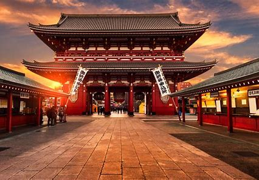
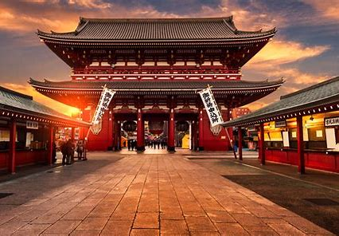
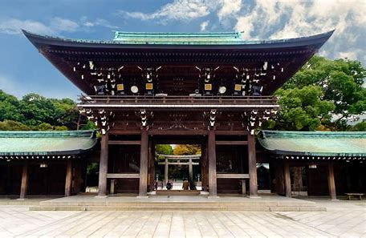
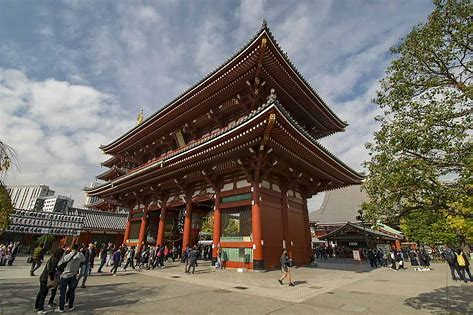
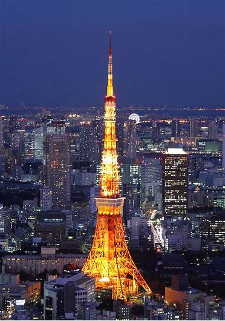
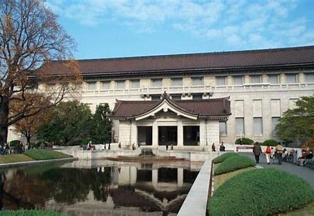

Temple Senso-ji
Situé dans le quartier d’Asakusa, le temple Senso-ji est le plus ancien temple bouddhiste de Tokyo. Sa magnifique lanterne rouge et ses boutiques de souvenirs en font un lieu incontournable

Exploration de la baie de Tokyo :
Fondation d’Edo
Époque d’Edo (1603-1868) :
Situé dans le quartier d’Asakusa, le temple Senso-ji est le plus ancien temple bouddhiste de Tokyo. Sa magnifique lanterne rouge et ses boutiques de souvenirs en font un lieu incontournable
Ce sanctuaire shintoïste est niché dans le quartier de Shibuya/Harajuku. La marche pour s’y rendre est agréable, et le temple lui-même est magnifique .

Le quartier est idéal pour flâner et faire du shopping. Le temple Senso-ji est également situé ici.

Cette tour emblématique, haute de 333 mètres, offre une vue imprenable sur la ville. Elle est souvent comparée à la Tour Eiffel de Paris.

Le plus ancien et le plus grand musée du Japon, situé dans le parc d’Ueno, abrite une vaste collection d’art et d’objets historiques .

La gastronomie tokyoïte est un véritable voyage culinaire à travers la diversité culturelle de cette ville cosmopolite. Voici quelques plats incontournables à déguster lors de votre séjour à Tokyo :
Tarif : À partir de 86,83 € par nuit
Tarif : À partir de 67,06 € par nuit
Tarif : À partir de 156,30 € par nuit
Tarif : À partir de 157,03 € par nuit